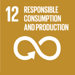

Goal 12: Responsible consumption and production
Achieving economic growth and sustainable development requires that we urgently reduce our ecological footprint by changing the way we produce and consume goods and resources. Agriculture is the biggest user of water worldwide, and irrigation now claims close to 70 percent of all freshwater for human use.
The efficient management of our shared natural resources, and the way we dispose of toxic waste and pollutants, are important targets to achieve this goal. Encouraging industries, businesses and consumers to recycle and reduce waste is equally important, as is supporting developing countries to move towards more sustainable patterns of consumption by 2030.
A large share of the world population is still consuming far too little to meet even their basic needs. Halving the per capita of global food waste at the retailer and consumer levels is also important for creating more efficient production and supply chains. This can help with food security, and shift us towards a more resource efficient economy.
Facts and figures
1.3 billion
1.3 billion tonnes of food is wasted every year, while almost 2 billion people go hungry or undernourished.
22%
The food sector accounts for around 22 percent of total greenhouse gas emissions, largely from the conversion of forests into farmland.
2 billion
Globally, 2 billion people are overweight or obese.
3%
Only 3 percent of the world’s water is fresh (drinkable), and humans are using it faster than nature can replenish it.
US$120 billion
If people everywhere switched to energy efficient lightbulbs, the world would save US$120 billion annually.
20%
One-fifth of the world’s final energy consumption in 2013 was from renewable sources.
- Implement the 10-year framework of programmes on sustainable consumption and production, all countries taking action, with developed countries taking the lead, taking into account the development and capabilities of developing countries
- By 2030, achieve the sustainable management and efficient use of natural resources
- By 2030, halve per capita global food waste at the retail and consumer levels and reduce food losses along production and supply chains, including post-harvest losses
- By 2020, achieve the environmentally sound management of chemicals and all wastes throughout their life cycle, in accordance with agreed international frameworks, and significantly reduce their release to air, water and soil in order to minimize their adverse impacts on human health and the environment
- By 2030, substantially reduce waste generation through prevention, reduction, recycling and reuse
- Encourage companies, especially large and transnational companies, to adopt sustainable practices and to integrate sustainability information into their reporting cycle
- Promote public procurement practices that are sustainable, in accordance with national policies and priorities
- By 2030, ensure that people everywhere have the relevant information and awareness for sustainable development and lifestyles in harmony with nature
- Support developing countries to strengthen their scientific and technological capacity to move towards more sustainable patterns of consumption and production
- Develop and implement tools to monitor sustainable development impacts for sustainable tourism that creates jobs and promotes local culture and products
- Rationalize inefficient fossil-fuel subsidies that encourage wasteful consumption by removing market distortions, in accordance with national circumstances, including by restructuring taxation and phasing out those harmful subsidies, where they exist, to reflect their environmental impacts, taking fully into account the specific needs and conditions of developing countries and minimizing the possible adverse impacts on their development in a manner that protects the poor and the affected communities

13 million tonnes of plastic reach the ocean every year. See how the journey is marked by opportunities to change course.

Gregoria Cruz doesn't just recycle waste, she re-imagines it. She's she's on a mission to create a culture of recycling Peru's second city.

Partnerships between scientists, local authorities and the community are showing promising results in protecting the Sabana-Camagüey ecosystem in…

Together, protecting the Benguela marine ecosystem
Three countries band together to protect one of the world's richest ecosystems, under threat from fishing, mining, pollution and other human…

People and the sea: Finding a sustainable balance
When olive ridley turtles hatch on the beach, Suhas Torasker carefully collects them and releases them into the sea. He’s part of group in his fishing…

Another kind of wealth: Ancestral culture
Where the Pemón live, the majestic landscape holds gold, diamonds and other precious minerals. But the indigenous people have another valuable…

Farmers have discovered a new use for Sereh merah, a plant long used to drive away evil spirits.

Pineapples on the path to sustainability
With support from UNDP, Costa Rica has introduced an action plan to foster production and trade that is responsible, fair and community-centred.